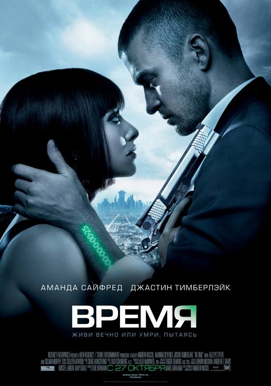

← Барча мақолалар
Ўзингизда вақтингиз қанчалик сизга қадрли эканлиги чуқур тушунчасини доимий ривожлантиринг.

Бировларга бу энг қимматли капиталингизни ўғирлашларига йўқ қўйманг ва уни фақат ва фақат унга арзигулик ва мақсадингизга етаклайдиган фаолиятларга сарф этинг!
🎬🎦🍿📽📹🎥🎞
Бош рольда Джастин Тимберлейк ўйнаган “Вақт” (In Time) номли фильмни кўришни тавсия этаман:
🇺🇿Ўзбек тилида:
https://youtu.be/5WOoeWRCS6M
🇷🇺Русс тилида:
https://youtu.be/wOUUfREJFLQ
Фильмни кўрганлар комментарийда ундан олган асосий ғоянгизни биз билан ўртоқлашинг!